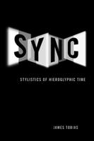

The profound historical appeal of films, video, and digital works emphasizing synchronized musicality and gesture
The profound historical appeal of films, video, and digital works emphasizing synchronized musicality and gesture


 The profound historical appeal of films, video, and digital works emphasizing synchronized musicality and gesture
The profound historical appeal of films, video, and digital works emphasizing synchronized musicality and gesture

|  |
SyncStylistics of Hieroglyphic TimeJames Tobiascloth EAN: 978-1-43990-201-1 (ISBN: 1-4399-0201-1) |
"Sync is a rich text in which James Tobias powerfully reimagines our traditional notions of audiovisual synchronization. I am extremely impressed with the author's ideas. Each case study in and of itself is excellent. Tobias has provided a distinctly original theory of synchronization."
—James Buhler, Associate Professor of Music Theory, Butler School of Music, University of Texas, Austin; coeditor of Music and Cinema ; and coauthor of Hearing the Movies: Music and Sound in Film History
In Sync, James Tobias examines the development of musical sound and image in cinema and media art, demonstrating how these elements define the nature and experience of reception. Placing musicality at the center of understanding streaming media, Tobias presents six interwoven stories about synchronized audiovisual media—from filmmaker Sergei Eisenstein’s Alexander Nevsky to Oskar Fischinger's Motion Painting No. 1 to today’s contemporary digital art and computer games—to show how musical synchronization effects are never merely “musical” in the literal sense of organized sound.
Tobias’s presentation of music and gesture in time-based media and in audiences’ engagement with media illustrates how streaming media devices are “timepieces” that do not tell time, but diagram time as affective labor. Their musical, gestural effects challenge us to describe time-based media in terms of synchronization and temporality rather than as either sound or image.
The case studies of different media works and platforms in Sync show how musicality not only drives narrative but is also a “mode of reception.” Once viewers grasp synchronized media as temporal diagrams, they can relate the resulting meanings to larger historical contexts and transformations.
Excerpt available at www.temple.edu/tempress
“James Tobias’s groundbreaking book offers erudite and thoughtful conversations on sound theory, music computation, and theories of spectatorship. Sync cobbles together a discontinuous history of musicality in the hands of cinematic practitioners from Sergei Eisenstein’s rhythmic montage, through Steina Vasulka’s feminist eco-ethics, to John Cameron Mitchell’s performative aesthetics. What emerges is a sonic genealogy building on fragments of counter-traditions. A deeply passionate work, Sync is an outstanding contribution to the fields of cinema studies and sound theory”
—Bhaskar Sarkar, Associate Professor, Film and Media Studies, University of California, Santa Barbara, and author of Mourning the Nation: Indian Cinema in the Wake of Partition
"Sync offers a much needed and thoroughly radical revision of debates around synchronization, opening up a range of different audiovisual modalities to political analysis, and breaking the stranglehold that existing forms of political discourse have had on discussions of sound–image relations. The author's key move has been to employ the notion of synch (sic) to address not only the relationships between sound and image in audiovisual media but also those between text and audience, focusing primarily on the experience of reception....[T]he approach adopted by Tobias is highly original.... [T]here is much to recommend this book which, in providing new perspectives on the political dimensions of audiovisuality, repays the close attention it demands."
—Screen
"[Sync] is an enormously ambitious statement of a fully formed and signed theory. The work combines elaborate historical contextualization of all of its central figures, an incredibly broad range of theoretical allusion and discussion, and a truly multi-disciplinary engagement with moving image media and music that marshals philosophy and media theory, film historical and new media objects, music theory and the history of cybernetics to make a rich and complex argument. There is almost nothing in the work that is not deeply thought through and densely elaborated. ... [I]t ultimately provides a truly innovative way to think musicality in moving image media."
—The Year's Work in Critical and Cultural Theory
List of Illustrations
Acknowledgments
1. Ciphers of Hieroglyphic Time
2. Eisenstein's Gesture: Breaking Down Alexander Nevsky
3. For Love of Music: Oskar Fischinger's Modal, Musical Diagram
4. Hanns Eisler's Dialectical Stream: Sync, Dissonance, and the Devil
5. Black Relationship: Improvising a Black Pacific
6. Melos, Telos, and Me: Transpositions of Identity in the Rock Musical
7. Stylistics of Hieroglyphic Time
Notes
Index
 | James Tobias is Associate Professor of Cinema and Digital Media Studies in the English Department of the University of California, Riverside. |
Cinema Studies
Cultural Studies
Mass Media and Communications
© 2015 Temple University. All Rights Reserved. This page: http://www.temple.edu/tempress/titles/2063_reg.html.